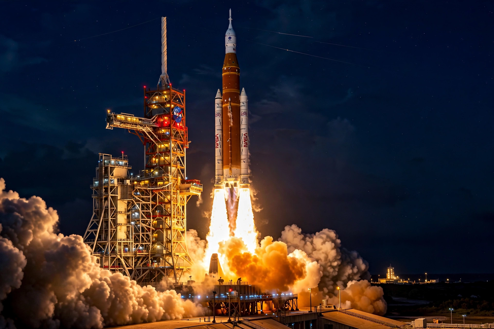

From Wikipedia, the free encyclopedia
| Artemis program | |
|---|---|
 | |
| Country | United States, with ESA, JAXA, CSA and other partners |
| Organisation | NASA |
| Purpose | Crewed lunar exploration; sustainable return to the Moon |
| Status | Ongoing |
| First flight | Artemis I (uncrewed, 2022) |
The Artemis program is a Moon exploration program led by the United States' National Aeronautics and Space Administration (NASA), formally established in 2017. Its stated goals include landing the first woman and the first person of colour on the Moon, establishing a sustainable human presence there, and preparing for eventual crewed missions to Mars. The program is named after Artemis, twin sister of Apollo in Greek mythology.
Artemis uses the Space Launch System (SLS) heavy-lift rocket and the Orion crew capsule, developed from earlier programs, together with commercial Human Landing Systems — SpaceX's Starship HLS for the first landings and Blue Origin's Blue Moon for later missions. A small space station, the Lunar Gateway, is planned for lunar orbit to support surface expeditions. The Artemis Accords, signed by dozens of nations, set out principles for civil exploration of the Moon.
Artemis I, an uncrewed test flight of SLS and Orion around the Moon, flew successfully in November–December 2022. Artemis II is planned as the first crewed flight, looping around the Moon without landing. Artemis III aims to land astronauts near the lunar south pole, a region of water-ice deposits in permanently shadowed craters, no earlier than the late 2020s after schedule revisions. Subsequent missions plan Gateway assembly and annual surface expeditions.
Categories: Artemis program | NASA programs | Human spaceflight programs